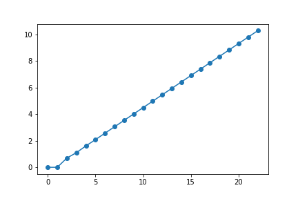

Exercícios de treino, 2¶
Bioquímica computacional 2019/2020 (Maio 2020)
Objetivo¶
No programas seguintes, preencha os ?????? com expressões apropriadas de forma a garantir que o resultado da execução do programa seja aquele que está exibido
Numéricos, sobre comandos for, listas em compreensão e numpy¶
Programa 1¶
import math from matplotlib import pyplot as plt fibs = [0, 1, 1, 2, 3, 5, 8, 13, 21, 34, 55, 89, 144, 233, 377, 610, 987, 1597, 2584, 4181, 6765, 10946, 17711, 28657] # logaritmos dos números com math.log() # mas não pode dar erro... logfibs = ?????? plt.plot(range(len(logfibs)), logfibs, 'o-') plt.show()

Solução
import math from matplotlib import pyplot as plt fibs = [0, 1, 1, 2, 3, 5, 8, 13, 21, 34, 55, 89, 144, 233, 377, 610, 987, 1597, 2584, 4181, 6765, 10946, 17711, 28657] # logaritmos dos números com math.log() # mas não pode dar erro... logfibs = [math.log(x) for x in fibs if x != 0] plt.plot(range(len(logfibs)), logfibs, 'o-') plt.show()
Programa 2¶
import numpy as np from matplotlib import pyplot as plt fibs = [0, 1, 1, 2, 3, 5, 8, 13, 21, 34, 55, 89, 144, 233, 377, 610, 987, 1597, 2584, 4181, 6765, 10946, 17711, 28657] fibs = np.array(fibs) # logaritmos dos números com np.log() # mas não pode dar erro... logfibs = ??????? plt.plot(np.arange(len(logfibs)), logfibs, 'o-') plt.show()
Solução
import numpy as np from matplotlib import pyplot as plt fibs = [0, 1, 1, 2, 3, 5, 8, 13, 21, 34, 55, 89, 144, 233, 377, 610, 987, 1597, 2584, 4181, 6765, 10946, 17711, 28657] fibs = np.array(fibs) # logaritmos dos números com np.log() # mas não pode dar erro... logfibs = np.log(fibs[fibs!=0]) plt.plot(np.arange(len(logfibs)), logfibs, 'o-') plt.show()
Programa 3¶
Sugestão: use a função np.log10() e a função np.trunc()
fibs = [1, 1, 2, 3, 5, 8, 13, 21, 34, 55, 89, 144, 233, 377, 610, 987, 1597, 2584, 4181, 6765, 10946, 17711, 28657] fibs = np.array(fibs) ndigits = ?????? print('numero de dígitos:') print(ndigits)
numero de dígitos:
[1. 1. 1. 1. 1. 1. 2. 2. 2. 2. 2. 3. 3. 3. 3. 3. 4. 4. 4. 4. 5. 5. 5.]
Solução
fibs = [1, 1, 2, 3, 5, 8, 13, 21, 34, 55, 89, 144, 233, 377, 610, 987, 1597, 2584, 4181, 6765, 10946, 17711, 28657] fibs = np.array(fibs) ndigits = np.trunc(1 + np.log10(fibs)) print('numero de dígitos:') print(ndigits)
Sobre processamento de ficheiros de texto estruturados¶
Preparação¶
Obtenha do moodle o ficheiro uniprot_scerevisiae.fasta e coloque na mesma pasta que o "programa 4".
Programa 4¶
with open('uniprot_scerevisiae.fasta') as f: records = f.read().split('>') # clean empty records records = [p for p in records if len(p) > 0] print(len(records)) headers = ?????? descriptions = [] accs = [] # header example: # sp|Q08641|AB140_YEAST tRNA(Thr) (cytosine(32)-N(3))-methyltransferase OS=Saccharomyces cerevisiae (strain ATCC 204508 / S288c) ... for header in headers: sp, acc, rest = header.split('|') description = rest.split(??????)[0] accs.append(acc) descriptions.append(description) print('first 5:') for h, d in zip(accs[:5], descriptions[:5]): print(h, d)
6049
first 5:
Q08641 AB140_YEAST tRNA(Thr) (cytosine(32)-N(3))-methyltransferase
P28240 ACEA_YEAST Isocitrate lyase
Q07622 ACK1_YEAST Activator of C kinase protein 1
Q03771 ACL4_YEAST Assembly chaperone of RPL4
Q02336 ADA2_YEAST Transcriptional adapter 2
Solução
with open('uniprot_scerevisiae.fasta') as f: records = f.read().split('>') # clean empty records records = [p for p in records if p] print(len(records)) headers = [record.splitlines()[0] for record in records] descriptions = [] accs = [] # header example: # sp|Q08641|AB140_YEAST tRNA(Thr) (cytosine(32)-N(3))-methyltransferase OS=Saccharomyces cerevisiae ... for header in headers: sp, acc, rest = header.split('|') description = rest.split('OS=')[0] accs.append(acc) descriptions.append(description) print('first 5:') for h, d in zip(accs[:5], descriptions[:5]): print(h, d)